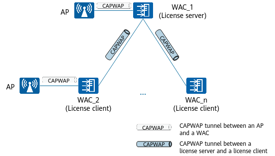

Understanding Centralized License Control
On a WAC + Fit AP network architecture, licenses can be loaded on the WAC to control the number of APs. With centralized license control, licenses on the network are centralized on the license server to form a resource pool for unified management and allocation.

- License client: reports and applies for licenses.
- License server: centrally manages and allocates licenses.
Connection Establishment Between the License Server and License Clients
- After enabling the centralized license control function on the license server and license clients, users specify the IP address of the license server on the license clients.
- A license client sends a connection establishment request to the license server.
- The license server responds to the connection establishment request, and establishes a CAPWAP tunnel with the license client. The license server and license client then communicate through the CAPWAP tunnel.
The license server supports connections with a maximum of 32 license clients.
License Synchronization
License synchronization is triggered in the following scenarios:
- A license client establishes a connection with the license server.
- After centralized license control is enabled, a license file is loaded on any WAC.
- License information is changed due to license application or release on the network.
In the preceding scenarios, the license client reports local license information to the license server, and the license server then synchronizes the latest license resource pool information to all connected license clients.
License Application and Release
After successfully establishing connections with the license server, license clients do not use the local licenses. Instead, the license server allocates licenses in the license resource pool to them.
- Applying for licenses
- When an AP requests to go online on any WAC, the WAC checks the number of online APs and remaining licenses in the license resource pool. If the number of online APs does not exceed the upper limit and the license resource pool has available licenses, the WAC allows the AP to go online.
- The WAC reports license information changes to the license server.
- The license server updates the license resource pool and synchronizes it to all license clients.
- Releasing licenses
- When an AP goes offline from the WAC, the WAC releases the corresponding license.
- The WAC reports license information changes to the license server.
- The license server updates the license resource pool and synchronizes it to all license clients.
Handling of Disconnection Between the License Server and License Clients
- Retains the total number of licenses in the license resource pool. The number of available licenses is updated to the total number minus the number of licenses used by the license client. The validity period of the license resource pool is 30 days.
- Supports only local licenses on the license client after the license resource pool expires. If the number of used licenses exceeds the number of local licenses, the WAC randomly disconnects some APs until the number of used licenses is the same as the number of local licenses.

Local licenses refer to the licenses imported to the local WAC.
- Excludes the number of licenses used on the disconnected license client from the number of used licenses in the license resource pool.
- Retains the number of licenses in the license resource pool for 30 days. If the connection is not restored after 30 days, the license resource pool on the license server deducts the local licenses reported by the disconnected license client and then synchronizes the latest resource pool information to other properly connected license clients.
Table 1 assumes that WAC_2 (license client) has 500 local licenses and 600 licenses have been used. After the license resource pool becomes invalid, the number of licenses used by WAC_2 is 100 greater than the number of local licenses. As a result, 100 APs are forcibly disconnected, and 500 local licenses on WAC_2 is deducted from the total number of licenses in the resource pool on the license server.
License Client-Server Connection Status |
Number of Local Licenses on WAC_2 |
Number of Licenses Used by WAC_2 |
Number of Licenses in the License Resource Pool on WAC_2 (Used/Total) |
Number of Licenses in the License Resource Pool on the License Server (Used/Total) |
|---|---|---|---|---|
Properly connected |
500 |
600 |
800/1000 |
800/1000 |
Disconnected (within 30 days) |
500 |
600 |
600/1000 |
200/1000 |
Disconnected (more than 30 days) |
500 |
500 |
Invalid |
200/500 |
Application Scenarios of Centralized License Control
Centralized license control can be applied to wireless configuration synchronization in VRRP HSB scenarios. You need to specify the master WAC and backup master WAC. The master WAC synchronizes wireless configurations to the backup master WAC. In this scenario, the two WACs in a VRRP group must be both license servers or license clients, as shown in Figure 2.